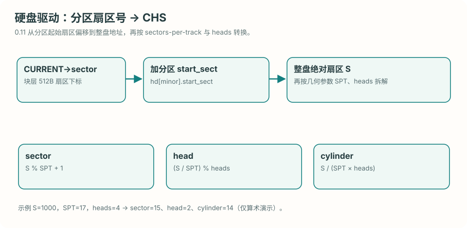
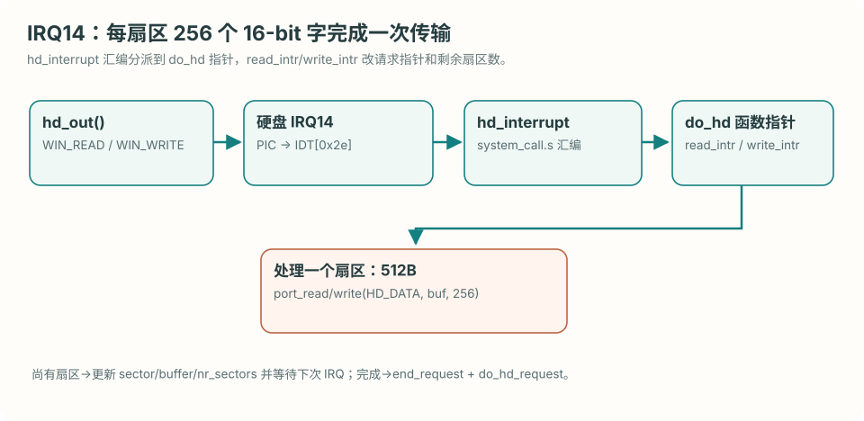

硬盘与 RAM 磁盘：CHS、IRQ14 和扇区级传输
精读 hd.c 如何将分区扇区号转为柱面/磁头/扇区，由汇编硬盘中断分派每扇区数据；对照 ramdisk.c 用内存复制完成相同 request。
CHS · IRQ14 · rd_start请求排好队以后，数据究竟怎样来到内存？
第 19 章完成的是“构造一个包含设备、扇区、长度和缓冲地址的 request”。对真实硬盘，Linux 0.11 必须将分区相对扇区号改写成整盘几何位置，向控制器寄存器发命令，等待 IRQ14，再通过数据端口读取或写入一个扇区。对 RAM 磁盘，底层没有真正的 I/O 中断，只需检查地址范围并执行内存复制。
因此两种设备提供相同的 do_*_request 块层入口，但其执行时序并不相同。旧文把 0.11 硬盘寄存器直接描述成现代 ATA LBA 地址格式，甚至虚构了一个独立的 C 版 hd_interrupt()，会直接干扰源码逐行阅读。

hd_info、hd[] 与设备 minor 是三个不同东西
hd.c 的 hd_info[2] 存每台物理硬盘的柱面数、磁头数、每磁道扇区数等 BIOS 几何信息。hd[5*MAX_HD] 则为每台硬盘保留一项整盘和四项分区的起点/扇区数，MAX_HD=2。硬盘 minor 设备号可以分成 drive=minor/5 与该盘的分区槽位。hd[minor].start_sect 是整个盘上的起始扇区偏移。
#define MAX_HD 2
static struct hd_i_struct hd_info[MAX_HD];
static struct hd_struct hd[5*MAX_HD];
/* 在 do_hd_request 内 */
dev = MINOR(CURRENT->dev);
block = CURRENT->sector;
block += hd[dev].start_sect;
dev /= 5;真正的 CHS 计算发生在加上分区起点之后。若直接用分区内 sector 计算 CHS，程序就会读到整盘头部的错误位置，这是无论读缓存有没有命中都无法弥补的地址错误。
hd 设备 minor=7 对应哪台盘、哪个分区槽位？（展开核对）
7/5 的整数商为 1、余数为 2，因此是第 2 台硬盘（从 0 计）的分区槽位 2。其实际起始扇区要读取 hd[7].start_sect，不能凭设备号猜出。
两个除法，把线性扇区 S 转为 CHS
若整盘绝对扇区号为 S、每磁道扇区数 SPT、每柱面的磁头数为 H，则 sector = (S % SPT) + 1，head = (S // SPT) % H，cylinder = S // (SPT * H)。扇区号以 1 开始，柱面和磁头从 0 开始。
S,SPT,H = 1000,17,4
sector = S % SPT + 1
head = (S//SPT)%H
cylinder = S//(SPT*H)
print(cylinder,head,sector) # 14 2 15do_hd_request 在源码里用两条 x86 divl 实现这一计算：先除以 SPT，余数 +1 形成 sector，再把前一步商除以磁头数，余数形成 head、商形成 cyl。然后调用 hd_out 装载寄存器和回调函数。
0x1F0 端口与命令寄存器的分工
hdreg.h 和 hd.c 使用传统主硬盘控制器端口：0x1F0 数据、0x1F1 错误、0x1F2 扇区数量、0x1F3 扇区编号、0x1F4/0x1F5 柱面低/高位、0x1F6 驱动器与磁头、0x1F7 状态/命令。发送 WIN_READ / WIN_WRITE 前还检查控制器 busy/ready 等状态。
这里的 HD_CURRENT 或等价驱动器/磁头寄存器中存的是 CHS 模式下磁头编号和驱动器选择；旧文若直接讲成“LBA 最高 4 位”，会与实际 hd_out(dev,nsect,sec,head,cyl,...) 不一致。
if (CURRENT->cmd == WRITE) {
hd_out(dev,nsect,sec,head,cyl,WIN_WRITE,&write_intr);
/* DRQ 后 port_write(...,256) */
} else if (CURRENT->cmd == READ) {
hd_out(dev,nsect,sec,head,cyl,WIN_READ,&read_intr);
}一扇区 512B，16-bit 端口数据一次传输 256 个字。写操作需要在命令后等待 DRQ，再先写一个扇区的数据；读操作则在中断时读取数据。实际硬件还涉及错误重试和控制器复位，不能只看成功分支。
IRQ14 并非调用一个简单的 C hd_interrupt 函数
hd_init() 注册块层处理器并调用 set_intr_gate(0x2E,&hd_interrupt) 安装硬盘中断向量 0x2E，也就是 PIC 重映射后的 IRQ14。这个 hd_interrupt 低级入口位于 kernel/system_call.s 汇编中，保存中断现场并通过 do_hd 指针选择 read_intr、write_intr、recal_intr 等 C 层函数。

port_read(HD_DATA,CURRENT->buffer,256);
CURRENT->errors = 0;
CURRENT->buffer += 512;
CURRENT->sector++;
if (--CURRENT->nr_sectors) {
do_hd = &read_intr;
return;
}
end_request(1);
do_hd_request();同一个请求若要求两个扇区，就需要在成功读取第一扇区后更新地址、剩余扇区数，并在后续中断中读取第二扇区。读完 end_request(1) 才释放当前请求、唤醒上层 buffer 等待者并触发队列中的下一项。
错误处理为何不能无限重试
MAX_ERRORS=7 限制一次请求允许的累计出错次数。bad_rw_intr() 增加 CURRENT->errors，达到上限后 end_request(0) 报失败；错误超过一半阈值时设置 reset，后续 do_hd_request 会调用 reset_hd 或 WIN_RESTORE 的重新校准路径。
这使回调不是单纯地“状态错 → 立刻失败”：它有重试、复位、重新校准、下一个扇区以及请求完成等多种分支。也因为多条路径可能从中断上下文调用，源码顶部明确提醒回调不能睡眠。
RAM 磁盘：同一 request_fn 接口，不使用 IDE 寄存器
ramdisk.c 的 rd_init(mem_start,length) 在启动阶段将一段已预留的主内存登记为 rd_start、rd_length，并为块主设备号 1 注册 do_rd_request。这不是运行时 malloc(2MiB) 的动态申请模型：内存起始地址和长度来自启动参数以及可选 RAMDISK 设置。
addr = rd_start + (CURRENT->sector << 9);
len = CURRENT->nr_sectors << 9;
if ((MINOR(CURRENT->dev) != 1) ||
(addr+len > rd_start+rd_length)) { ... }若是 WRITE，memcpy(addr,CURRENT->buffer,len)；若是 READ，则反向拷贝。完成之后立即 end_request(1) 并处理下一请求。无真实 IDE 中断，也不需要 CHS；但仍然尊重主设备号、minor、扇区换算和队列协议，因此文件系统可以通过同一个 bread 调用访问它。
ramdisk 请求 sector=2、nr_sectors=2，对应 rd_start 哪段内存？（展开核对）
起始偏移=2×512=1024 字节；长度=2×512=1024 字节，所以访问 [rd_start+1024, rd_start+2048)。前提是该区间不越过 rd_length 边界。
对照主设备 1 与 3 的真实不同路径
grep -n 'hd_info\|start_sect\|do_hd_request\|read_intr\|write_intr' kernel/blk_drv/hd.c
grep -n 'hd_interrupt:\|_do_hd\|unexpected_hd_interrupt' kernel/system_call.s
grep -n 'rd_init\|do_rd_request\|rd_start\|rd_length' kernel/blk_drv/ramdisk.c
grep -n 'set_intr_gate(0x2E\|MAX_ERRORS' kernel/blk_drv/hd.c预期能核对 CHS 的两次除法、IRQ14 的汇编入口/函数指针分派、按扇区移动 buffer 指针和 RAM 磁盘复制边界。这些静态核查不等价于真实 IDE 寄存器访问成功。
从块层走到真实设备
- kernel/blk_drv/hd.c：CHS、hd_out、读写回调、复位与 hd_init。
- kernel/system_call.s：hd_interrupt 汇编分派。
- kernel/blk_drv/ramdisk.c：内存块设备与 rd_load。
- kernel/blk_drv/blk.h：队列完成宏和主设备号分派。
- include/linux/hdreg.h：历史硬盘控制器端口常量。
掌握了文件系统/块层/硬盘三段机制后，下一阶段可以沿字符设备、TTY 与键盘控制器追踪另一类 I/O：它们是流式字节事件，不需要按 1KiB 块做 bmap 和 bread。